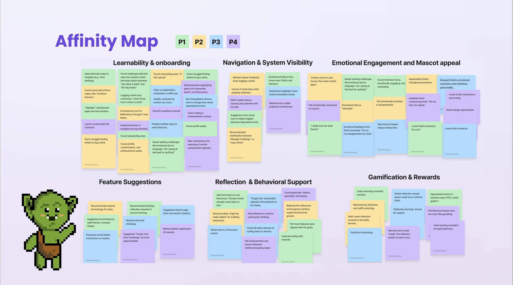
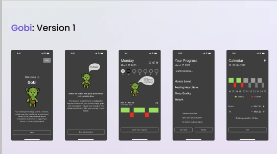
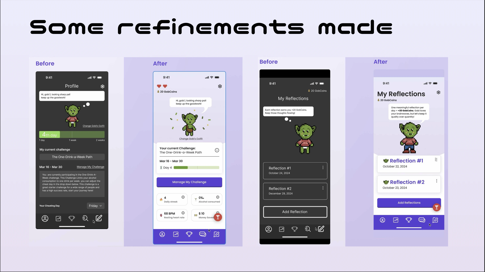
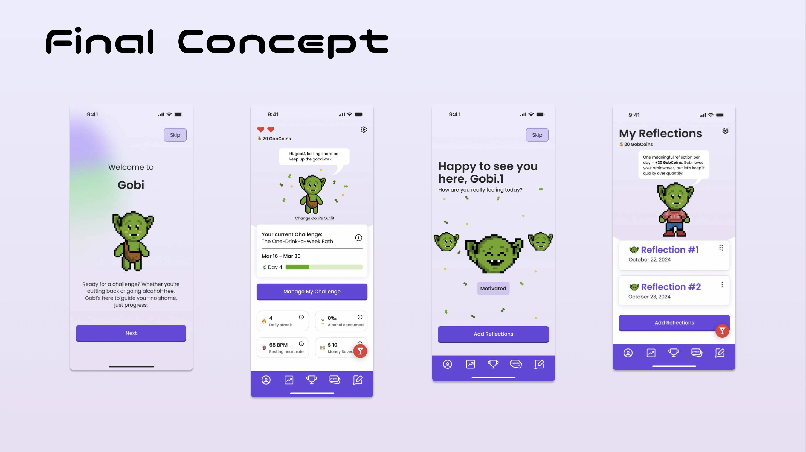

Research & Insights
Methods: 7 initial discovery interviews, 4 Observational usability tests (Zoom & in-person), Secondary discovery research, Thematic coding & affinity mapping, Alcohol and alcohol-free space observational research (in-person)
Top Insights: Users wanted progress, not perfection;sobriety apps often felt punitive, A mascot or emotional companion made behavior change feel approachable, Gamified elements like achievements and avatar customization improved engagement, Tracking needed to feel private, simple, and encouraging, not judgmental, Personal data (health stats, money saved) increased a sense of control.
Key Finding: Gamification, when paired with humor and emotional design, helps users approach serious topics, like alcohol moderation—with self-compassion and consistency.

Ideation & Architecture
Through iterative workshops and feature pitches, the team distilled early discovery into one clear direction: Sobriety, but gamified. We came up with Gobi, a goblin companion embodying self-growth through imperfection. Core features were mapped across three pillars: Gamification, Tracking, Emotional Support.

Design Evolution
User testing exposed both clarity gaps and emotional wins: Navigation: Icon ambiguity resolved via clearer titles and simplified bottom bar. Customization: Users loved changing Gobi's outfit, but wanted previews before spending coins. Onboarding: Users found setup intuitive and friendly. Kept conversational tone. Reflections Feature: Some users "farmed" coins with empty entries. Added cooldowns and reward caps. Logging a drink: Confusion between "Manage Challenge" and "Log Drink." Revised button labels and visual hierarchy. Feedback system: Users responded emotionally to Gobi's reactions ("Oh no, I've disappointed my Gobi"). Retained and refined emotional feedback.

Final Concept
Gobi is a challenge-based sobriety app that turns behavior change into a personalized adventure. Through avatar evolution, achievements, and reflective journaling, users see tangible rewards for healthy habits, both emotional and measurable. Key Features: • Gamified Tracking: Avatar growth, achievements, streaks, and GobCoins. • Health Insights: Sleep, heart rate, money saved, and weekly progress. • Reflections: Guided prompts that transform self-awareness into earned rewards. • Personalization: Outfits, colors, and "Goblin moods" that evolve with progress. • Smart Integration: Optional biometric sync for data-driven insights. Ideal Scenario - Alex's Journey: Alex isn't quitting—she's only cutting back. After choosing "One-Drink-a-Week," she logs moods, completes reflections, earns coins, customizes her goblin, and sees her saved money climb. Gobi cheers her on, celebrating every small victory with humor and empathy.

Outcome & Takeaways
Gobi is a challenge-based sobriety app that turns behavior change into a personalized adventure. Through avatar evolution, achievements, and reflective journaling, users see tangible rewards for healthy habits, both emotional and measurable. Key Features: • Gamified Tracking: Avatar growth, achievements, streaks, and GobCoins. • Health Insights: Sleep, heart rate, money saved, and weekly progress. • Reflections: Guided prompts that transform self-awareness into earned rewards. • Personalization: Outfits, colors, and "Goblin moods" that evolve with progress. • Smart Integration: Optional biometric sync for data-driven insights. Ideal Scenario - Alex's Journey: Alex isn't quitting—she's only cutting back. After choosing "One-Drink-a-Week," she logs moods, completes reflections, earns coins, customizes her goblin, and sees her saved money climb. Gobi cheers her on, celebrating every small victory with humor and empathy.